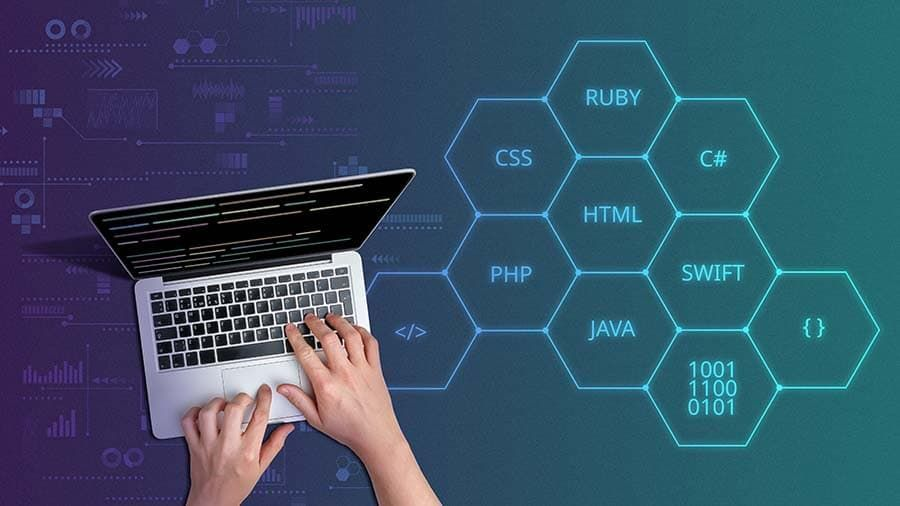

Fİrmanıza özel yazılım ihtiyaçlarınızı analiz ederek,iş süreçlerinizi hızlandıracak ve verimliliğinizi artıracak çözümler üretiyoruz. Web tabanlı uygulamalrdan masaüstü yazılımlara, ERP sistemlerinden entegrasyon çözümlerine kadar geniş bir yelpazede hizmet sunuyoryuz.

🚀 Hangi Sorunları Çözüyoruz?
🔄 Otomasyon Eksikliği
Tekrarlayan görevleri otomatikleştirerek zaman ve maliyet tasarrufu sağlıyoruz.
📊 Veri Yönetimi
Verilerinizi etkili bir şekilde yönetmenizi sağlayan özel veritabanı çözümleri sunuyoruz.
⚙️ Entegrasyon Zorlukları
Farklı sistemlerin birbiriyle sorunsuz çalışmasını sağlayan özel API çözümleri.
🧠 Kullanılan Teknolojiler
Laravel
Node.js
Python
PostgreSQL
Docker